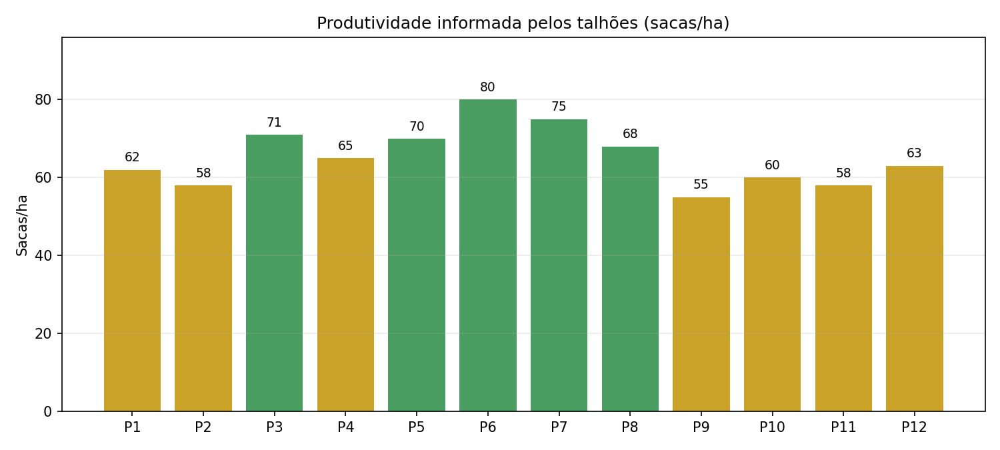

Conversor numérico
Digite um valor para ver a conversão.
Módulos práticos
Use os formulários abaixo para testar a lógica do projeto no navegador.
Python
Os mesmos conceitos dos scripts Python aparecem aqui em formulários rápidos para demonstração ao vivo.
Exemplo de gráfico gerado por um script Python e exibido no site (bônus).

O gráfico é atualizado pelo servidor Python quando você clica em Gerar gráfico (Python).
Módulo 04 — Conversor de Dados
Informe as dimensões do talhão para calcular a área em metros quadrados e hectares.